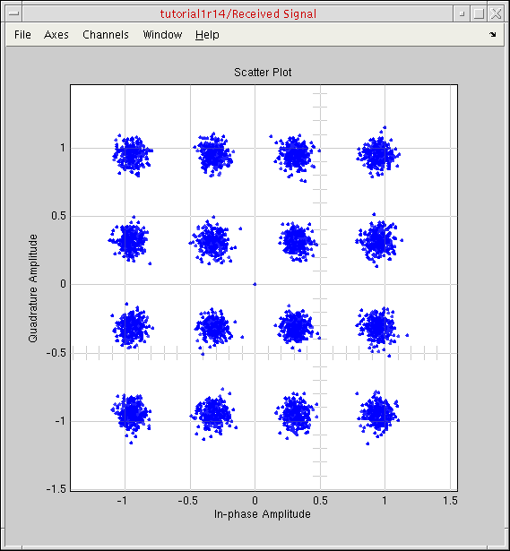
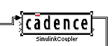

1
AMS-MATLAB/Simulink Cosimulation
See the following topics for tutorial details:
- Introducing AMS-MATLAB/Simulink Cosimulation
- Understanding the Different Cosimulation Flows
- Setting Up the AMS-MATLAB/Simulink Cosimulation Example
- Modifying the Simulink Model
- Increasing the Noise for the AWGN Channel
- Adding the Simulink Coupler Module to the Testbench
- Converting Complex Signals to Real and Imaginary Parts
- Inserting an Ideal Gain Block in the Testbench Schematic
- Rewiring the Testbench Schematic
- Setting the Simulink Stop Time
- Opening the Virtuoso Schematic
- Creating the Coupler in the Schematic Window
- Placing the coupler_2_3_a Instance on the Schematic
- Viewing the Entire AMS-MATLAB/Simulink Signal Flow
- Exiting MATLAB
Introducing AMS-MATLAB/Simulink Cosimulation
Concept engineering and system-level simulation tools such as MATLAB®/Simulink® support the specification of high-level system concepts in the early stages of a design.
The picture above shows the top-level schematic for the system-level model of a wireless LAN (the IEEE 802.11a demo). The transmitter blocks encode and modulate binary random data and send the orthogonal frequency-division multiplexing (OFDM) signal to a white Gaussian noise channel model. The receiver blocks demodulate and decode the channel output. Finally, the system compares the received bits with the original bit stream to compute the bit error rate.
The standard compatible system-level model of the wireless LAN link comprises standard Simulink library modules. You can use this system-level model as the golden reference for the implementation of the system components.
Using cosimulation with the Spectre AMS Designer simulator and The MathWorks MATLAB®/Simulink® (AMS-MATLAB/Simulink cosimulation), you can include the design and simulation of analog and mixed-signal subsystems in your system-level simulation. You can take into account the effects originating from the analog RF parts of the transmitter and receiver.
You can design your analog and mixed-signal subsystems using Cadence® Virtuoso® software. You can simulate these designs using the Virtuoso Spectre RF and AMS Designer circuit simulators.
The picture below shows the RF transmitter module design for this tutorial consisting of filters, an up-converting mixer, and an amplifier. For faster simulation time, we modeled the complex base-band domain of the RF components using the Verilog®-A modeling language. You can use this same approach to perform equivalent behavioral pass-band and transistor-level simulations.
When measuring the RF subsystem characteristics (such as intercept points, noise figure, and corner frequencies), you might think you can use only simple one- and two-tone sinusoidal sources as stimuli. Using AMS-MATLAB/Simulink cosimulation, you can use more realistic stimuli such as modulated signals. You can also achieve the corresponding post-processing required for system performance evaluation.
AMS-MATLAB/Simulink cosimulation combines the best of system-level simulation with analog and RF simulation. Simulink provides large libraries of DSP algorithms for generating complicated signals and for post-processing. Virtuoso® software provides an optimal design environment for analog/RF and mixed-signal subsystems. The Spectre AMS Designer and Xcelium Mixed-Signal simulator is a powerful single-kernel, mixed-signal simulator for transistor-level circuits and all common behavioral languages.
Understanding the Different Cosimulation Flows
AMS-MATLAB/Simulink cosimulation supports different flows that support different groups of users:
| Flow | Description |
|---|---|
|
Run cosimulation by starting MATLAB/Simulink from the Virtuoso® Analog Design Environment (ADE) |
|
|
Run the cosimulation from MATLAB/Simulink (without starting ADE) using the |
|
|
Start MATLAB first, then start the AMS environment from the Virtuoso hierarchy editor (HED), and run simulations separately using each of these programs
You can use this same flow from ADE, but this tutorial will cover only the flow from the AMS environment (HED).
See “Running Cosimulation from the Spectre AMS Designer Environment”. |
Setting Up the AMS-MATLAB/Simulink Cosimulation Example
To set up the example files, do the following in a terminal window:
-
Make and change to a directory for the example:
mkdir amsTutorials cd amsTutorials
-
Copy the migration example files to this directory:
cp -r $CDSHOME/tools/dfII/samples/tutorials/AMS/MATLABCosimulation.tar.gz .
-
Decompress the archive file:
gunzip MATLABCosimulation.tar.gz tar xf MATLABCosimulation.tar
-
Change to the following directory:
cd MATLABCosimulation
-
Source the setup file:
source SETUP
TheSETUPfile sets theMATLABPATHandTUT_DIRenvironment variables.
This tutorial demonstrates cosimulation using the IEEE 802.11a demo that appears in “Introducing AMS-MATLAB/Simulink Cosimulation”. To set up the cosimulation, do the following:
- Verify that the standalone simulations run successfully in MATLAB/Simulink and AMS Designer.
-
Place and configure the coupler module on the Simulink schematic.
See “Adding the Simulink Coupler Module to the Testbench”. -
Place and configure the corresponding coupler module on the ADE schematic.
See “Placing the coupler_2_3_a Instance on the Schematic”.
You are ready to run cosimulation using each of the three flows outlined in “Understanding the Different Cosimulation Flows”.
Modifying the Simulink Model
To modify the Simulink model, do the following:
-
Start MATLAB software:
matlab &
-
In the MATLAB Command Window, type the following command to open the library containing the coupler module and other examples:
open SimCouplerLib.mdl
- To open an example, double-click its blue symbol.
-
To insert the coupler module, drag-and-drop the Coupler Module from the AMS Designer – Simulink Cosimulation Library. If you are using MATLAB version R13 (instead of R14), you must open the SimCouplerLib_r13 at this point by double-clicking the yellow box. While the coupling technology is equivalent in both MATLAB releases, the MATLAB demo and the standard Simulink libraries are slightly different. R14 designs are not backward compatible with R13.
-
Double-click Step 1 (leftmost green box) to open the end-to-end design for a wireless LAN transmission system.
See the picture in “Introducing AMS-MATLAB/Simulink Cosimulation”. -
Choose Simulation – Start.
A spectrum scope and scatter diagram appear.
The minor deviations in the scatter diagram originated from the noisy channel.
In the testbench window, the bit error rate information appears at the output of the Error Rate Calculation block.
- Observe that the bit error rate is zero.
Increasing the Noise for the AWGN Channel
To increase the noise for the AWGN channel, do the following:
-
In the testbench window, double-click the AWGN block.
The Function Block Parameters form appears. -
In the SNR (dB) field, change the signal-to-noise ratio from 20 to
13.
- Click Apply.
-
Choose Simulation – Start to start the simulation again.
The final plots look like this:
The scatter diagram shows some distortion. After some seconds, bit errors do occur.
- Change the SNR back to 20.
Adding the Simulink Coupler Module to the Testbench
To add the Simulink coupler module to the testbench, do the following:
-
Drag-and-drop the SimulinkCoupler block from the Library window (see “Modifying the Simulink Model”) to the testbench window (see above for placement position).
We place the coupler block between the OFDM Transmitter and the AWGN block to include the analog transmitter RF front end in this system testbench. -
Double-click the SimulinkCoupler block.
The Function Block Parameters window appears. -
In the Number of input pins field, type
3.
While the third input pin is not necessary in this case, it illustrates how signals flow and how we will create the coupler in the Virtuoso® design environment. -
In the Number of output pins field, type
2. -
In the Frame mode field, select framed.

-
Click OK.
The SimulinkCoupler block has the correct number of pins.
You can resize the SimulinkCoupler block so that it fits better with the signal lines. -
(Optional) To view details about the framed signals, choose Format – Port/Signal Displays – Signal Dimensions in the testbench window.
Signal dimensions appear on the schematic.
Converting Complex Signals to Real and Imaginary Parts
The signals in this example are complex-valued signals. Before simulating with AMS Designer, you must split these complex signals into their real and imaginary parts. The Simulink library contains the converters we need for this purpose.
-
In the testbench window, choose View – Simulink Library.
The Library window appears.
-
Double-click Math Operations.
The math operator and conversion blocks appear.
The conversions we want for this tutorial appear in the bottom right corner.
- Drag-and-drop the Complex to Real-Imag block from the Library window to the testbench window and place it on the left side of the SimulinkCoupler block.
- Drag-and-drop the Real-Imag to Complex block from the Library window to the testbench window and place it on the right side of the SimulinkCoupler block.
- Rewire the testbench schematic to accomodate the new blocks.
Inserting an Ideal Gain Block in the Testbench Schematic
Because the analog/RF subsystem will eventually change the signal level, we will insert an ideal gain block at the output of the coupler block so that we can adapt the signal level properties of the digital base-band receiver.
-
In the testbench window, choose View – Simulink Library.
The Library window appears. -
Double-click Math Operations.
The math operator and conversion blocks appear. - Drag-and-drop the Gain block from the Library window to the testbench window and place it near the output of the SimulinkCoupler block.
-
To rotate the block, right-click and choose Format – Rotate Block.
See the picture in “Adding the Simulink Coupler Module to the Testbench”. -
Double-click the Gain block.
The Function Block Parameters form appears. -
In the Gain field, type
0.04. - Click OK.
- Rewire the testbench schematic to accomodate the Gain block.
Rewiring the Testbench Schematic
You can rewire the design as follows:
-
Right-click the wire you want to remove and select Cut.
For example, you will cut the wire between the OFDM Transmitter and AWGN blocks to fit the SimulinkCoupler block, and you will cut the wire between the AWGN and Simulation off down sampling action blocks to fit the Gain block. - Hover the mouse pointer over the module pin you want to connect until it changes to a cross.
-
Click-and-drag from the beginning connection point to the destination connection point and release the mouse button.
Once you rewire the testbench schematic, it should look like the picture in “Adding the Simulink Coupler Module to the Testbench”. Using two Spectrum Scope blocks—one before and one after the SimulinkCoupler block—we can compare the before and after signals.
To add the second Spectrum Scope block before the SimulinkCoupler block, do the following:
- Right-click Spectrum Scope1 and select Copy.
- Right-click near where you want to place the second one and select Paste.
- To flip the block so that the port is on the left, right-click it and choose Format – Flip Block.
- Hover the mouse pointer over the port until it changes to a cross.
- Click-and-drag to connect it to the output of the OFDM Transmitter block.
The Simulink model is ready for cosimulation. The Simulink model automatically detects information about the frame size and sampling time.
Setting the Simulink Stop Time
To set the stop time of the Simulink simulation, do the following:
-
In the testbench window, choose Simulation – Configuration Parameters.
The Configuration Parameters form appears. -
In the Stop time field, type
1000e-6(to match the1mstop time in the ADE setup later).
- Click OK.
Opening the Virtuoso Schematic
To open the schematic for this tutorial, do the following:
-
Start the Virtuoso® software:
virtuoso &
-
In the command interpreter window (CIW), choose File – Open.
The File Open form appears. -
In the File group box, select the following:
Field Selection -
Click OK.
The Open Configuration form appears.
-
Click OK.
The RF Transmitter System Testbench schematic appears.
The schematic contains- A driver module to scale the coupler output
- The RF transmitter model
- A simple line termination using resistors
The pieces that the MATLAB/Simulink design provides are
Creating the Coupler in the Schematic Window
You can create a coupler in the schematic window using either of two methods. The first method is the one we recommend.
-
Creating a Coupler Using the Fixed-Cell Method
Using the fixed-cell coupler method (the recommended method), you create the specific couplers that you need and save them in your library. You determine the number of coupler pins before you generate the coupler. This coupler is simple and works for all three cosimulation flows. Use this method to create a coupler instance for your design specifically.We have already created a fixed coupler with two inputs and three outputs for this tutorial (coupler_2_3_a) and made it available in theAMSDcouplerlibrary. See “Running Cosimulation from ADE Using the Fixed-Cell Coupler” for more information. -
Creating a Coupler Using the simulinkCoupler Method
Using thesimulinkCouplermethod, you can change the pins at any time. The simulinkCoupler is flexible and allows you to generate Verilog-AMS code automatically in the Virtuoso® Analog Design Environment (ADE). You can also modify the generated Verilog-AMS code.You can find thesimulinkCouplerin theanalogLiblibrary. ThesimulinkCoupleris a Pcell coupler. See “Running Cosimulation from ADE Using the simulinkCoupler” for more information.
How you perform cosimulation depends on which method you use.
Creating a Coupler Using the Fixed-Cell Method
coupler_2_3_a) and made it available in the AMSDcoupler library, so you need not perform these steps. To create a coupler using the fixed-cell method, do the following:
-
In the schematic window, choose Launch – Mixed Signal Options – AMS.
AMS appears on the menu banner.
-
Choose AMS – Simulink® Coupler Creation.
The Simulink® Fixed Cell Coupler Creation form appears. -
In the Number of input pins field, type
2. -
In the Number of output pins field, type
3.
-
Click Generate Fixed Coupler.
The software creates a coupler with two inputs and three outputs with the namecoupler_2_3_a. - Click Close.
Creating a Coupler Using the simulinkCoupler Method
The simulinkCoupler is a parameterized cell (simulinkCoupler instance, do the following:
-
In the schematic window, type
ito open the Add Instance form. - Click Browse to open the Library Browser.
- In the Library column, select analogLib.
-
In the Cell column, scroll down and select simulinkCoupler.
-
On the Add Instance form, change the number of input pins and the number of output pins to whatever you need.
-
In the schematic window, click to place the
simulinkCouplerinstance.
- Choose File – Check and Save.
Placing the coupler_2_3_a Instance on the Schematic
AMSDcoupler/tb_ieee_802_11a_demo/schematic.
To place the coupler_2_3_a instance on the schematic, do the following:
-
In the schematic window, choose Create – Instance (or type
i).
The Add Instance form appears.
- Click Browse.
-
In the Library Browser window that appears, select the following:
This library/cell/view appears in the appropriate fields on the Add Instance form. -
Move your mouse cursor over the WLAN Signal block on the schematic and click to place the coupler instance to the left of the driver instance.
- Press Esc.
-
Wire up the instance according to the following picture (or you can open the finished schematic that we provide:
AMSDcoupler/tb_ieee_802_11a_demo/schematic).

- Choose File – Check and Save.
You can view object properties for the coupler instance by doing the following:
- Select the coupler instance.
-
Choose Edit – Properties – Objects (or type
q).
The Edit Object Properties form appears.
- When you are finished viewing the object properties for the coupler, click Cancel.
Viewing the Entire AMS-MATLAB/Simulink Signal Flow
The following diagram shows the entire signal flow through the MATLAB®/Simulink® and Cadence® Virtuoso® environments.
Each sink (coupler input pin) acts as a signal source (output pin) in the other environment. The signal flows into the three input pins on the Simulink schematic, out the three output pins on the Virtuoso schematic, out the two output pins on the Simulink schematic, and through the rest of the design on the Simulink schematic.
Exiting MATLAB
To exit MATLAB, do the following:
-
In the testbench schematic window, choose File – Exit MATLAB.
You are ready to run cosimulation in the Virtuoso Analog Design Environment (ADE). See “Running Cosimulation from ADE Using the Fixed-Cell Coupler”.
Return to top